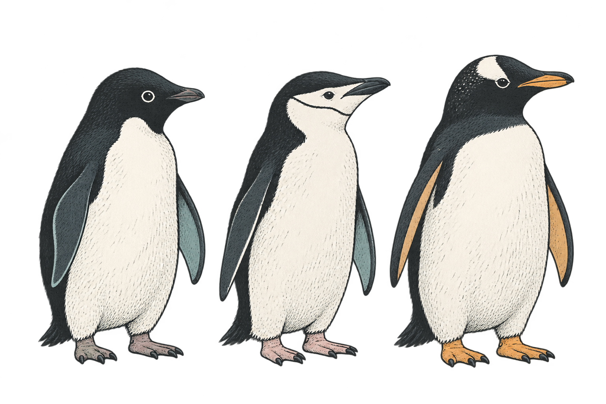

figure canvaspage · substrate view
100%
504 × 360 pt · Palmer Penguins · 12 visible elements
Explore / semantic figure inspector
penguins.points · substrate · semantic records
| # | row | element | species | island | bill mm | flipper mm | status |
|---|
Propose / verification workspace
selected anchor · structured proposal · verification gate
local context
structured proposal
check result
提交的 substrate row 对应 E-05，误差在 0.5 pt 内。
Semantic control room / six-layer record path
Palmer Penguins · substrate · six semantic layers · projections
Palmer Penguins · semantic story
从“看见点”到“说明、验证、复用”

原始图 · 12 markssame figure / different understanding
raw substrate → gloss semantic projection
semantic layers
substrate · records · projections
substrate / data lens
penguins.points · row 5 · panel1
| row | sample | species | island | flipper | status |
|---|
语义路径
substrate → records → projections
语义提议 · 本地记录
anchor · relation · target
projection / timeline
narrative · accessibility · collaboration
projection ready · Palmer Penguins
species → flipper → claim
能力地图
已完成、试验中和下一步都留在同一条时间线上。
证据脉冲
penguins fixture · local record state
Interactive wireframe · gloss
把一张静态路线图拆成可以阅读、筛选和追踪的项目页面。先看路径，再看证据，最后看下一步。
点击任意节点，右侧详情会切换；这是线稿阶段的交互骨架。
筛选只改变卡片显示，不改变项目事实；点击卡片可聚焦该里程碑。
捕获、查询、图包与基准集。
绑定已做，角色规则与完整标签待做。
批注可追溯，图更新后可重挂。
声明检查、交互、无障碍投影。
工具调用已试，公开 API 仍在早期。
同模型、同预算、同问题的对照。
用只读工具让模型查图，再用代码核验提交。当前线稿把它当成可展开的研究入口，而不是已经完成的产品终点。
这些是开发集 pilot，用来决定下一步怎么问，不是最终报告数字。
条件 A：绘图代码、数据、构建表、SVG 与只读 R 沙箱。
条件 B：只读工具、隐藏绑定、提交即核验。
条件 S：逐行尝试，不用模型。